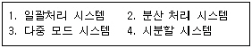
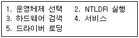
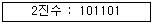
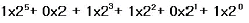
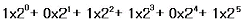
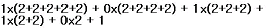
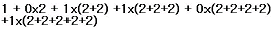
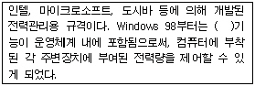
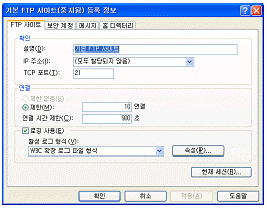

PC정비사-1급 (2005-09-11 기출문제)
1과목: PC운영체제
1. 인터넷 익스플로러의 버전 중에서 Windows XP에서 기본적으로 제공하는 것은?
- 6.0
- 6.5
- 7.0
- 7.5
(정답률: 69%)

2. 운영체제의 주된 기능이 아닌 것은?
- 컴퓨터 시스템의 초기화 기능
- 데이터 정의 기능
- 효율적인 자원 관리 기능
- 효율적인 자원 할당 기능
(정답률: 53%)
3. 운영체제의 발달과정 순서를 옳게 나열한 것은?

- 1-4-3-2
- 1-2-3-4
- 1-3-4-2
- 4-3-2-1
(정답률: 60%)
4. Windows XP가 부팅하는 과정이다. 과정이 순서대로 나열된 것은?

- 1-2-3-4-5
- 2-3-1-4-5
- 2-1-3-5-4
- 1-5-3-2-4
(정답률: 75%)
5. 다음의 파일 중 성격이 다른 것은?
- ARJ file
- LZH file
- ZIP file
- CAP file
(정답률: 79%)
6. Windows XP의 제어판 속에 있는 디스플레이 기능에 대한 설명 중 잘못된 것은?
- 배경그림으로 사용할 수 있는 그림파일은 BMP만 가능하다.
- Windows의 바탕화면을 HTML문서로도 꾸밀 수 있다.
- 배경그림으로 GIF, JPEG, BMP 파일이 가능하다.
- 바탕화면에 인터넷 컨텐츠를 넣을 수 있는 기능을 액티브데스크톱 기능이라 한다.
(정답률: 74%)
7. Windows XP의 프로그램 추가/제거에는 4가지의 탭이 있다. 4가지 구성 탭에 해당하지 않는 것은?
- 프로그램 변경/제거
- 새 프로그램 추가
- Windows 구성요소 추가/제거
- 하드웨어 프로필
(정답률: 88%)
8. Windows XP의 레지스트리 값들 중에서 RFC2018에 정의된 Selective Acknowledgement를 활성화하는 것은?
- TcpWindowSize
- Tcp1323Option
- DefaultTTL
- SackOpt
(정답률: 40%)
9. Windows XP에서 모든 기능을 제공하는 파일 시스템은?
- EXT2
- FAT16
- FAT32
- NTFS
(정답률: 77%)
10. Windows XP에서 서비스를 설정 할 때 사용하는 MMC는 관리도구를 모아둔 것이다. 다음 중 MMC 관리에 속하지 않는 것은?
- 장치관리자
- 로컬 사용자 및 그룹
- 디스크관리
- 메모리관리
(정답률: 50%)
11. 컴퓨터들 간에 통신을 하기 위해 필요한 사항을 미리 정해 놓은 통신규약은?
- Telnet
- Protocol
- IP
- PHP
(정답률: 85%)
12. 익스플로러를 실행했을 때 초기화면이 되는 홈페이지로 사용할 페이지를 설정하는 메뉴는?
- [파일] - [등록정보] - [홈 페이지]
- [즐겨찾기] - [즐겨찾기에 추가] - [홈 페이지]
- [도구] - [인터넷 옵션] - [일반] - [홈 페이지]
- [보기] - [도구모음] - [사용자 정의]
(정답률: 94%)
13. 아웃룩 익스프레스를 이용하여 전자우편 교환시 편지가 반송되었다. 그 원인으로 볼 수 없는 것은?
- 상대방의 주소를 잘못 입력했다.
- 수신자가 송신자의 메일을 수신거부로 등록해 두었다.
- 수신자의 메일 서버가 다운되었다.
- 수신자의 메일 서버로부터 수신자가 편지를 가져오는 도중 통신오류가 발생했다.
(정답률: 77%)
14. 실행 파일의 확장자로 알맞게 짝지어진 것은?
- EXE, SYS, BAT
- COM, AUX, PCX
- COM, BAT, OBJ
- COM, EXE, BAT
(정답률: 82%)
15. IIS에서 HTTP 오류 코드와 연결이 잘못된 것은?
- 204 : 내용이 없음
- 400 : 불량요청
- 401 : 인증되지 않았음
- 404 : 구현할 수 없음
(정답률: 63%)
2과목: PC주변기기
16. Windows 운영체제 환경에서는 CD-ROM 드라이브에 CD를 삽입하면 자동으로 실행되는 기능이 있으나, 때로는 실행해서는 안 될 프로그램이 자동으로 실행되기 때문에 불편하다. CD-ROM드라이브에 CD를 넣어도 자동으로 실행되지 않도록 하는 키는?
- Ctrl 키
- Alt 키
- Esc 키
- Shift 키
(정답률: 53%)
17. 하드디스크의 일부 공간을 메모리로 사용하는 것은?
- 리소스
- 가상메모리
- 디스크캐시
- 버퍼
(정답률: 91%)
18. 모니터에 대한 일반적인 설명 중 잘못된 것은?
- 모니터의 화면 굴곡에 따라 일반 모니터, 평면 모니터, 완전 평면 모니터로 구분한다.
- 멀티 싱크 모니터는 주파수 대역이 넓어 TTL 신호와 아날로그 신호까지 처리할 수 있다.
- 모니터의 성능을 구분하는데는 도트 피치(Dot Pitch)로 표시하는데 도트 피치가 클수록 고급 모니터이며, 미세하게 화면에 출력할 수 있다.
- 모니터의 인터페이스는 D-SUB와 DVI 방식 등이 사용되고 있다.
(정답률: 50%)
19. 특정 해상도나 작업 도중에 모니터 화면에 얼룩이 지고 물결 모양의 나선이 나타나는 현상은?
- 모아레
- 핀쿠션
- 버닝
- 방자
(정답률: 78%)
20. 레이저 프린터에 대한 설명 중 잘못된 것은?
- 미국의 HP사가 세계 최초로 개발하였다.
- 램과 마이크로프로세서를 내장하고 있다.
- PCL과 PS라고 하는 내장된 프린터 언어를 사용한다.
- 그림이나 문자가 종이 위에 토너가루로 나타나면 레이저의 열을 이용하여 토너가루를 녹여 출력물을 완성한다.
(정답률: 64%)
21. 프린터의 특성을 설명한 것으로 잘못된 것은?
- 잉크 프린터는 프린터의 헤드핀이 리본을 쳐서 인쇄하는 방식으로 소음이 크다.
- 한 번에 한 줄씩 인쇄하는 라인 프린터와 한 번에 한 자씩 인쇄하는 문자 프린터가 있다.
- 레이저 프린터는 페이지 단위로 인쇄한다.
- 충격식 방식은 소음이 많고, 비충격식 방식은 소음이 적다.
(정답률: 48%)
22. 컴퓨터를 연결하는 각 장치간에 선을 사용하지 않고 무선 연결이 가능하게 해주는 장치는?
- IrDA
- PS/2 포트
- 멀티포트
- 시리얼 포트(Serial Port)
(정답률: 90%)
23. ATX 메인보드에 대한 설명 중 잘못된 것은?
- 메인보드나 카드 등의 크기나 모양을 폼팩터(Form Factor)라고 하는데, ATX 방식은 바로 메인보드의 폼팩터를 의미하는 것이다.
- ATX 보드는 AT 방식의 메인보드를 90도 꺾어놓은 모양으로 되어 있다.
- PS/2, 패러렐 포트, 시리얼 포트, USB 포트 등이 메인보드의 측면에 달려있어 외부기기를 연결하기가 편리하다.
- 슬롯방식 CPU만을 지원한다.
(정답률: 65%)
24. 메인 보드의 주요 부분에 속하는 것은?
- 확장 슬롯
- 램댁(RAMDAC)
- 주메모리
- SCSI(Small Computer System Interface)
(정답률: 36%)
25. SCSI 하드디스크를 연결하는 방법에 대한 설명으로 잘못된 것은?
- ID 번호를 설정해야 한다.
- 케이블연결 방법은 EIDE와 동일하지만 마스터, 슬레이브 점퍼 설정이 제공되지 않는다.
- 스카시 주변기기는 모두 ID번호를 가지게 되며, 이 번호는 주변장치에서 점퍼를 이용하여 설정할 수 있다.
- 하드디스크와 같이 속도가 빠른 장치는 높은 번호를 지정한다.
(정답률: 58%)
26. CPU 오버클러킹을 하기 위한 메인보드의 조치로 잘못된 것은?
- 전압 설정을 조금 낮추어서 CPU의 발열량을 최소화한다.
- 보다 강력한 Cooler를 장착하여 CPU의 발열량을 최소화한다.
- ROM BIOS 오버클러킹 실패시 메인보드의 점퍼나 딥스위치를 사용한다.
- 메인보드가 지원하는 사양을 꼭 알아둔다.
(정답률: 72%)
27. 디지털 카메라의 특징이 아닌 것은?
- 촬영한 이미지는 디지털 카메라에 내장된 액정화면으로 바로 볼 수 있다.
- 저장된 이미지를 가공 할 수 있다.
- 촬영된 이미지는 어떤 경우로도 수정이 불가능하다.
- 디지털 카메라의 성능은 CCD 성능에 의해 많은 부분이 결정된다.
(정답률: 69%)
28. 사운드카드에서 소리의 생성방식에 따른 분류가 아닌 것은?
- FM 방식
- PCM 방식
- Full Duplex 방식
- Wave Table
(정답률: 69%)
29. 무선LAN의 표준과 최고 전송 속도의 연결이 잘못된 것은?
- 802.11 - 2Mbps
- 802.11b - 11Mbps
- 802.11a - 54Mbps
- 802.11g - 15Mbps
(정답률: 70%)
30. 컴퓨터 데이터 기록을 담기 위한 CD-ROM이 수록된 규격은?
- 옐로우 북
- 레드 북
- 그린 북
- 오렌지 북
(정답률: 75%)
3과목: 디지털 논리회로
31. 다음 2진수를 디지털 시스템(ON/OFF)에서 사용하는 진법으로 올바로 표현한 것은?(문제오류로 실제 시험장에서 가, 나번을 정답 처리한 문제입니다. 여기서는 가번을 정답 처리 합니다.)





(정답률: 85%)
32. MOS 논리회로의 특징이 아닌 것은?
- 소비 전력이 작다.
- 높은 입력 임피던스이다.
- 잡음 여유도가 크다.
- TTL과의 혼용이 용이하다.
(정답률: 56%)
33. FF(플립플롭) 회로의 종류가 아닌 것은?
- D-FF
- E-FF
- T-FF
- SR-FF
(정답률: 50%)
34. 전가산기의 올바른 구성은?
- 반가산기 2개와 AND 게이트 1개
- 반가산기 2개와 AND 게이트 2개
- 반가산기 2개와 OR 게이트 1개
- 반가산기 2개와 OR 게이트 2개
(정답률: 60%)
35. 펄스진폭변조와 펄스위상변조를 비교한 설명으로 잘못된 것은?
- 펄스 위상 변조가 채널수를 더 크게 할 수 있다.
- S/N비는 펄스 진폭 변조가 더 떨어진다.
- 채널수가 같을 때는 펄스진폭변조방식의 펄스폭이 넓어도 된다.
- 모두 다중통신 방식에 적합하다.
(정답률: 44%)
4과목: PC유지보수
36. 메모리에 대한 설명 중 잘못된 것은?
- RDRAM은 짝수개로 장착을 하여야 한다.
- 듀얼 채널을 사용 할 경우 정해진 위치에 따라 장착을 하여야 한다.
- SDRAM은 빈 메모리 슬롯 아무 곳에나 장착이 가능하다.
- DDR-SRAM은 메모리 슬롯 중 지정된 위치에 장착을 하여야 한다.
(정답률: 73%)
37. 펜티엄III 메인보드에 없는 슬롯은?
- ISA 슬롯
- VESA 슬롯
- PCI 슬롯
- AGP 슬롯
(정답률: 65%)
38. 현재 시스템은 Award BIOS의 CMOS를 이용하고 있다. 이 시스템의 절전 기능에 대하여 설정하는 곳은?
- Standard CMOS Setup
- Power Management Setup
- PnP AND PCI Setup
- BIOS Features Setup
(정답률: 80%)
39. 점퍼 설정이나 드라이버 설치 등 별도의 추가적인 설정 없이 시스템에 장착한 후, 곧바로 사용할 수 있는 장치는?
- CPU
- 램
- VGA 카드
- 사운드카드
(정답률: 75%)
40. 다음 괄호에 들어갈 용어는?

- 네트워크
- EFS
- ACPI
- P2P
(정답률: 75%)
41. Windows와 같은 PnP를 지원하는 운영체제가 PnP를 지원하는 주변장치를 인식하는 방법은?
- PnP 장치의 고유한 IP Address
- PnP 장치의 고유한 MAC Address
- PnP 장치의 고유한 PnP ID
- PnP 장치의 고유한 Processor Number
(정답률: 93%)
42. 컴퓨터를 부팅할 때 'Disk boot failure, insert system disk and press enter'라는 메시지가 나타난다. 이 메시지가 나타나는 원인과 해결책으로 부적절한 것은?
- A 드라이브에 부팅 불가능한 디스켓이 삽입되어 있거나, HDD로 부팅이 불가능한 경우에 나타날 수 있다.
- 설치된 운영체제가 Windows 계열인지 확인한다.
- 시스템에 연결된 저장 장치에서 부트 섹터를 찾지 못하는 경우에 나타나는 메시지다.
- HDD에 이상이 없다면 CMOS 셋업에서 HDD 타입(CHS 혹은 LBA)이 제대로 설정 되어있는지 살펴본다.
(정답률: 43%)
43. 모니터에 붉은색 계열이 나타나지 않는다. 이때 점검할 필요가 없는 것은?
- 디스플레이 어댑터의 오류 여부
- 모니터 주위에 강한 자성체가 있는지 여부
- 모니터 전자총의 오류 여부
- 시스템 메모리 초기화 실패 여부
(정답률: 72%)
44. Windows를 사용하는 도중 속도가 점점 느려지는 현상이 발생하였다. 문제의 원인으로 잘못된 것은?
- 레지스트리가 점점 커지고 불필요한 내용이 쌓이기 때문이다.
- Windows에서 사용하는 DLL과 드라이버 파일이 많아지기 때문이다.
- 하드디스크의 단편화가 심해지기 때문이다.
- 디스크 캐시와 가상 메모리의 성능이 저하되기 때문이다.
(정답률: 57%)
45. 바이러스 감염경로와 거리가 먼 것은?
- 다운로드(Download)
- 전자우편(E-mail)
- 파일 복사(Copy)
- Low Level Format
(정답률: 60%)
46. 리눅스 운영체제에서 현재 디렉터리의 경로를 보여주는 명령어는?
- cd
- pwd
- mkdir
- mv
(정답률: 72%)
47. 메인보드의 BIOS는 부팅할 때 하드웨어의 오류를 체크하여 오류가 발견되면 비프음을 통하여 알려주고 있다. 다음의 비프음 회수에 대한 오류의 설명으로 잘못된 것은?
- 2번 - 메모리 페리티 에러
- 7번 - 프로세서 가상 모드 에러
- 8번 - 롬 바이오스 에러
- 10번 - CMOS 입출력 에러
(정답률: 54%)
48. 하드디스크를 포맷하고 다시 설치할 경우 해야 할 작업에 포함되지 않는 것은?
- 새로 설치할 운영체제의 요구사항에 사용자의 컴퓨터가 적합한지 확인한다.
- 하드디스크에 저장된 중요한 자료는 백업을 받는다.
- CPU의 오버클록을 원할 경우 반드시 하드디스크 포맷 전에 작업을 하여야 한다.
- CMOS에서 부팅순서를 정하여 원하는 장치로 부팅을 할 수 있게 하여야 한다.
(정답률: 72%)
49. PC를 업그레이드 하고자 할 때 먼저 교체할 일반적인 순서로 옳게 나열한 것은?
- HDD - VGA - RAM - CPU - Main Board
- CPU - RAM - VGA - Main Board - HDD
- Main Board - CPU - RAM - VGA - HDD
- RAM - CPU - VGA - Main Board - HDD
(정답률: 67%)
50. Windows XP를 재 설치 해야할 경우가 아닌 것은?
- 메인보드를 교체한 경우
- 부팅이 되지 않는 경우
- 운영체제 사용 도중 다운이 빈번한 경우
- 하드디스크를 추가 장착한 경우
(정답률: 88%)
5과목: PC네트워크
51. 스위치 허브에 대한 설명 중 올바른 것은?
- 스위치는 네트워크 계층 중 물리계층에 속한다.
- 목적지 주소가 연결되지 않은 포트에서 무조건 전송한다.
- 스위치에 연결된 포트를 1:1로 연결하기 때문에, 각 포트에 스위치에서 제공하는 최대 속도를 보장해 준다.
- 목적지가 아닌 포트에도 프레임을 전달한다.
(정답률: 60%)
52. 전화신호의 주파수 대역과 데이터 주파수 대역폭의 통신 채널을 분리하고, 데이터 채널을 통해 고속의 데이터를 송수신하는 방법은?
- 케이블 모뎀
- PSTN
- 광케이블
- ADSL
(정답률: 85%)
53. 여러 대의 컴퓨터를 연결할 때 마지막에는 반드시 터미네이터를 연결해야 하는 네트워크 연결 방법은?
- BNC 케이블 연결
- USB 케이블 연결
- 크로스 케이블 연결
- FX 케이블 연결
(정답률: 65%)
54. TCP/IP 프로토콜 군에서 UDP가 동작되는 계층은?
- 전송 계층
- 응용 계층
- 네트워크 인터페이스 계층
- 인터넷 계층
(정답률: 73%)
55. OSI 7 Layer 중 서로 다른 네트워크의 차이를 극복하여 종점간에 신뢰성 있고, 투명한 데이터 전송을 제공하고, 종점간의 에러 복구와 흐름제어를 하는 것은?
- 네트워크 계층
- 전송 계층
- 세션 계층
- 응용 계층
(정답률: 64%)
56. 아래 그림과 같이 IIS 에서 [기본 FTP(File Transfer Protocol) 사이트 등록정보] 메뉴 설정시 익명연결 허용을 설정할 수 있는 탭은?

- FTP 사이트
- 홈디렉터리
- 메시지
- 보안 계정
(정답률: 67%)
57. 유틸리티 중에서 TCP/IP 통계를 통한 NetBIOS를 연결시키는 것은?
- Netsho /nbt
- NBTSTAT
- NetBEUI /all
- NETSTAT
(정답률: 47%)
58. 데이터링크 계층에서 로컬 네트워크에 있는 호스트를 찾을때 이용하는 것은?
- 포트번호
- MAC Address
- 디폴트 게이트웨이
- IP Address
(정답률: 70%)
59. 메일 클라이언트(아웃룩, 유도라 등)가 메일 서버에서 자신의 PC로 메일을 가져올 때 사용하는 프로토콜은?
- FTP
- POP
- SMTP
- HTTP
(정답률: 50%)
60. 웹서버를 운영하려면 어떤 포트를 열어야 하는가?
- TCP 21
- TCP 25
- TCP 80
- TCP 110
(정답률: 74%)